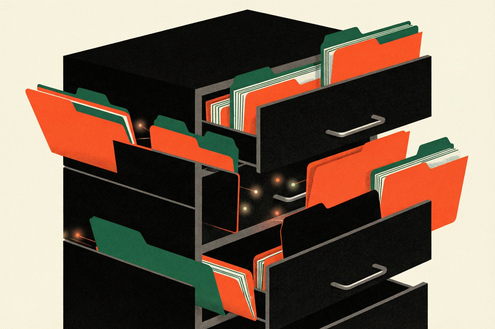

Du clic à la page : le voyage de 300 millisecondes
Vous tapez une adresse, vous appuyez sur Entrée, la page apparaît. Entre les deux, une chaîne logistique invisible.

Un clic, et la page est là. Cette immédiateté cache une séquence précise : traduire un nom en adresse, ouvrir une connexion, demander un document, le fabriquer, le mettre en page. Comprendre ce trajet aide à diagnostiquer les lenteurs — et à mieux comprendre le web.
Le GPS : le DNS
Vous tapez « aktibcode.com ». Votre ordinateur ne sait pas où se trouve ce serveur. Il interroge donc le DNS, l’annuaire d’Internet, qui traduit le nom en adresse IP — une suite de chiffres qui identifie une machine. C’est le bottin du web, distribué et mis en cache un peu partout pour répondre vite.
Si l’entrée est en cache, la réponse arrive en quelques millisecondes. Sinon, la requête remonte une chaîne de serveurs DNS jusqu’à trouver l’adresse. C’est souvent la première source de lenteur perçue, surtout sur un réseau mobile instable.
La prise de contact
Une fois l’adresse connue, votre navigateur ouvre une connexion avec le serveur (TCP), puis négocie le chiffrement (TLS) si l’adresse est en HTTPS. Ces étapes ajoutent des allers-retours. Sur une connexion lente, chaque aller-retour coûte cher ; d’où l’importance de les limiter et de les réutiliser.
La commande : HTTP
Le navigateur envoie ensuite une requête HTTP : « donne-moi cette page », avec des en-têtes qui précisent la langue, le type de contenu accepté, les cookies, etc. Le serveur répond avec un code de statut, des en-têtes et un corps de page.
httpGET /articles HTTP/2
Host: aktibcode.com
→ 200 OK
Content-Type: text/html; charset=utf-8La cuisine du serveur
Derrière, le serveur (ou une fonction, une API) prépare la réponse : il interroge une base de données, applique des règles, assemble un gabarit HTML. Parfois la page est déjà prête et stockée en cache ; c’est souvent ce qui fait la différence entre 50 et 500 millisecondes.
La réponse traverse ensuite des réseaux, des opérateurs et parfois un CDN, un réseau de serveurs proches de vous qui garde des copies des fichiers. Plus la copie est proche, plus le voyage est court.
Le montage dans le navigateur
Le navigateur lit le HTML, découvre des styles (CSS) et des scripts (JavaScript), télécharge les images et les polices, construit l’arbre de la page, calcule la mise en page, puis peint les pixels. Chaque ressource manquante est une nouvelle requête. Une image lourde ou un script bloquant peut retarder l’affichage de toute la page.
Chaque page web est le résultat d’une négociation entre des dizaines de machines qui ne se sont jamais vues.
Pourquoi tout peut ralentir
- Le DNS ou la connexion mettent trop de temps à répondre.
- Le serveur fabrique la page à chaque visite, sans cache.
- Les images sont énormes et les scripts bloquent le rendu.
- Le réseau mobile est mauvais, ou le Wi-Fi saturé.
- Le navigateur est ralenti par des extensions ou un appareil ancien.
La vitesse n’est pas qu’une question de confort : chaque seconde d’attente fait perdre des visiteurs. Mais elle est aussi une question de sobriété : une page plus légère consomme moins de données, d’énergie et de matériel. Le meilleur octet reste celui qu’on n’envoie pas.
L’essentiel en 3 points
- Une visite web enchaîne DNS, connexion, requête, réponse, puis rendu.
- Le cache et la proximité des serveurs réduisent fortement les délais.
- Alléger les pages améliore à la fois l’expérience et l’empreinte environnementale.
Sources principales
Pour vérifier, approfondir ou prendre en compte l’évolution du sujet.
- Comment fonctionne le Web — MDN Web Docs
- Vue d’ensemble du protocole HTTP — MDN Web Docs
- Fast load times — web.dev

Une base de données, c’est un classeur avec des règles
Sans base de données, votre boutique en ligne vendrait le même livre à deux personnes. Ou perdrait la moitié de ses commandes au redémarrage.

Une API, c’est une prise électrique pour logiciels
Derrière chaque paiement en ligne, chaque bulletin météo et chaque réponse de chatbot, il y a une API. Voici ce que c’est, sans jargon.